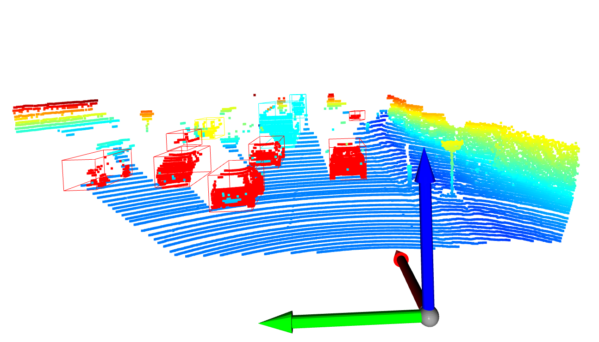
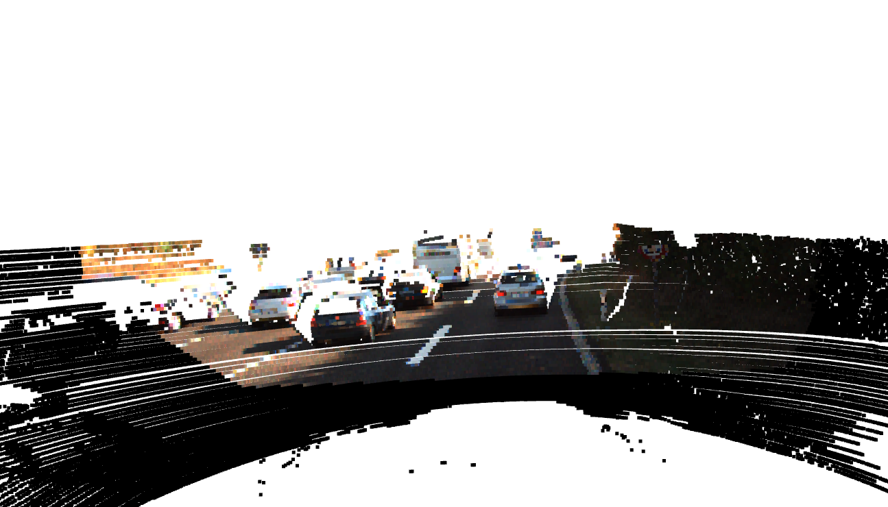

Point Cloud Semantic Segmentation

Abstract
This project tackles the challenge of enhancing semantic information in self-driving cars' mapping and localization processes by combining LIDARs with cameras to obtain semantic painted point clouds. To achieve this, they leverage deep learning, transfer learning, and classical computer vision techniques, pre-processing data using Point-to-Point Iterative Closest Point (ICP) for alignment. The process involves projecting semantic color labels from RGB images onto the point cloud using extrinsic parameters, and semantic segmentation is performed using DeepLabv3Plus-Pytorch pretrained on Cityscapes dataset. The results demonstrate successful point painting, showcasing the approach's effectiveness in improving localization and mapping in autonomous vehicles.

A point cloud that is assumed as a reference frame

Aligned Point Clouds (1-10) using ICP

Semantic Segmentation of Kitti Dataset

Point Cloud Semantic Segmentation of Kitti Dataset
Introduction
In the field of self-driving cars, LIDARs serve as crucial depth sensing tools. However, mapping or localization often requires higher-level semantic information. Challenges arise when parked cars obstruct features, hindering localization or causing pseudo-dynamic obstacles. Moving cars also pose a challenge for LIDAR-based SLAM systems, leading to mapping artifacts. Additionally, LIDAR sensors' low vertical resolution makes semantic detection challenging. To address these issues, experts in robotics and computer vision propose combining LIDARs with cameras to obtain semantic painted point clouds.
In the context of Structure from Motion, the aim is to determine 3D depth using monocular or stereo cameras from different poses. Visual Inertial Odometry involves integrating camera shots and IMU sensor readings for localization and mapping, often using the MSCKF variant of the Extended Kalman Filter. LIDAR employs laser beams to remotely measure distances and create high-resolution 3D point clouds, representing object shapes and surface characteristics. Point clouds find applications in computer vision, robotics, and 3D modeling.
The primary objective of this project is to perform semantic segmentation using a camera and project the results onto the point cloud for semantic segmentation of the scene. Semantic segmentation involves labeling each pixel in an image with a class label, such as "car," "road," or "building." By combining camera and LIDAR data, color and depth information can enhance semantic segmentation accuracy. The segmented point cloud enables various tasks, such as object recognition, localization, and mapping, benefiting autonomous vehicles, robotics, and 3D modeling applications.
Pre-Processing
In pursuit of achieving point painting, various methodologies can be adopted, contingent upon available resources and specific application requirements. One approach involves directly employing a multi-modal PointNet++ that combines point clouds and images to extract features and colorize the point cloud based on the associated image information. Alternatively, another method entails projecting the 3D data of the point clouds onto 2D images, requiring the availability of accurate projection matrices between the lidar and camera frames.
For this project, the latter approach is selected, leveraging a comprehensive amalgamation of Deep Learning, Transfer Learning, and Classical Computer Vision techniques. To facilitate this process, meticulous pre-processing of data from different sensors is imperative to ensure alignment to a common reference frame. To accomplish this crucial step, Point-to-Point Iterative Closest Point (ICP) is utilized. ICP serves to compute the transformation between successive point clouds, aligning them to a common reference frame. By establishing point correspondences and iteratively refining the transformation through center of mass calculations, ICP effectively reduces the distance between the aligned point clouds.
However, it is essential to acknowledge certain limitations associated with ICP. The method assumes substantial similarity between point clouds and considers only minor transformations between them. Consequently, if these limitations are overlooked, ICP may yield an incorrect transformation matrix. Additionally, when confronted with similar objects situated proximately, ICP registration might encounter challenges and confusion, potentially impacting the alignment accuracy. Despite these limitations, the combination of Deep Learning, Transfer Learning, and Classical Computer Vision methodologies, coupled with meticulous pre-processing using ICP, paves the way for an efficient and effective point painting process.
Semantic Segmentation
Various neural networks, including Fully Convolutional Networks (FCN), U-Net, and SegNet, have proven effective in predicting semantic labels for image frames through training on annotated datasets. To transfer these semantic color labels from RGB images to the Lidar point cloud, the project leverages the extrinsics between the sensors, aligning the coordinate systems of the camera and Lidar. This transformation allows the projection of semantic labels onto corresponding points in the point cloud. The registration method employed in this project aligns the data and facilitates the application of semantic labels to the point cloud. By utilizing DeepLabv3Plus-Pytorch, which is pretrained on the Cityscapes dataset, the project performs semantic segmentation and enables tasks such as object recognition, localization, and mapping on the KITTI dataset. The transfer learning process incorporates weights from the pre-trained network, ensuring improved segmentation accuracy.
Point Painting
The project aims to achieve point cloud projection on images by utilizing the extrinsic parameters of both the lidar and camera systems. This requires obtaining the projection matrices for both sensors. One of the key challenges encountered in this process is the disparity in the coverage area between the point cloud (typically full 360 degrees or 180 degrees) and the camera's field of view (FOV). Consequently, when projecting the points onto a 2D image, a significant portion of the points falls outside the camera's FOV. To address this issue, data outside the FOV must be cropped, ensuring that only relevant points are considered for projection. The results exhibit successful point painting, showcasing the effectiveness of the approach.
Point Cloud Semantic Segmentation of Kitti Dataset
Point Cloud Semantic Segmentation of Kitti Dataset
POint Painting on Kitti Dataset